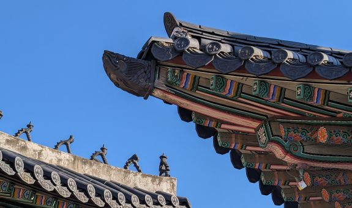

2000년, 서울
서울은 대한민국의 수도이며 시대에 따라 위례성, 한산, 한성, 한양, 양주, 남경, 경성 등 여러 명칭으로 불렸습니다. 암사동 선사주거지를 통해 알 수 있듯 서울은 신석기시대부터 사람들이 거주했고, 삼국시대, 고려, 조선을 거쳐 약 2000년의 역사를 지닌 곳입니다.
' 살아 숨쉬는 서울의 역사 '
서울은 대한민국의 수도이며 과거 백제, 조선의 수도로 시대에 따라 위례성, 한산, 한성, 한양, 양주, 남경, 경성 등 여러 명칭으로 불렸습니다. 암사동 선사주거지를 통해 알 수 있듯 서울은 신석기시대부터 사람들이 거주했고, 삼국시대, 고려, 조선을 거쳐 약 2000년의 역사를 지닌 곳입니다. 서울의 역사를 좀 더 상세히 알아보기 위해 고대, 중세, 근대, 현대로 시대를 구분하였으니 시대에 따른 서울의 역사를 확인해 보시기 바랍니다.
서울 어디까지 가봤니?
서울로 떠나는 역사여행

한권으로 읽는 서울 역사이야기
서울역사 2000년시대별 서울
- 고대서울
- 중세서울
- 근대서울
- 현대서울
선사시대 서울에 사람이 살기 시작했다.
선사시대란 문자로 기록되기 이전의 시대로 구석기, 신석기 시대가 이에 해당한다. 한강 유역에 사람이 살기 시작한 것은 구석기 시대로 강남구 삼성동 50번지 일대에서 흑요석으로 만든 석기 등 구석기 시대 유물이 출토되었다. 하지만 본격적으로 집을 짓고 마을을 이루며 살았던 것은 신석기 시대이며, 신석기 시대 유적은 서울 곳곳에서 발굴되었는데 이중 대표적인 것이 강동구 암사동 유적이다.